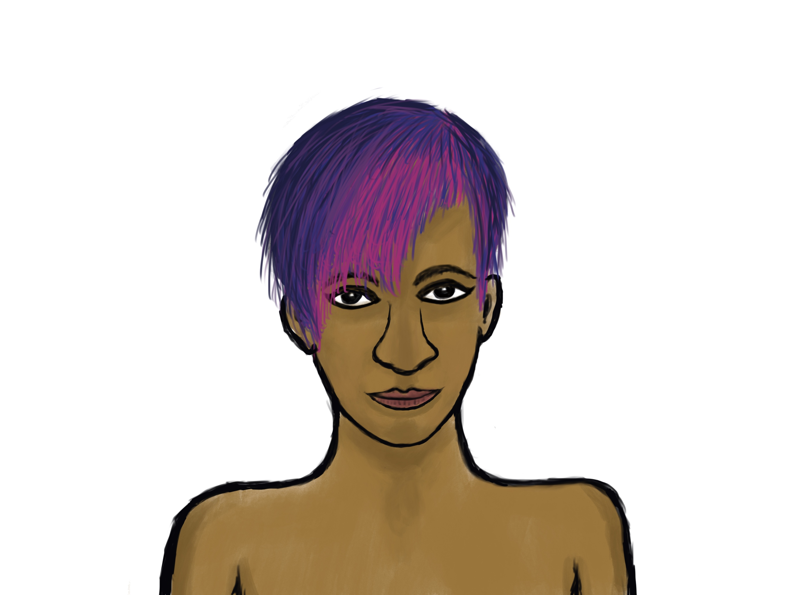

Sumu Tasib
Bio
Sumu (Su) Tasib is an author and scientist living in Seattle, Washington, and has been selected to be a 2023 Jack Straw Writer. A Boy Named Su is their first book, a collection of non-fiction stories and essays about their journey with genderqueerness. Su also hosts the Queer Kahani podcast, a series of bite-sized queer stories and discussions. They are currently working on a collection of short stories, the first of which, "Through the Walls," was selected for inclusion in the 2022 Seattle Erotic Arts Festival (SEAF) and appears in the SEAF Literary Art Anthology 2022. Su is available for readings and talks/discussions on the gender spectrum; contact them directly for bookings.
Su's book can be found at the Elliott Bay Book Company and at amazon.com; selected chapters and other writings are also available on Medium. Su uses he/they pronouns.
Contact
Su can be reached via email (sumu.tasib@gmail.com), facebook (sumu.tasib), or instagram (@sumu_tasib).